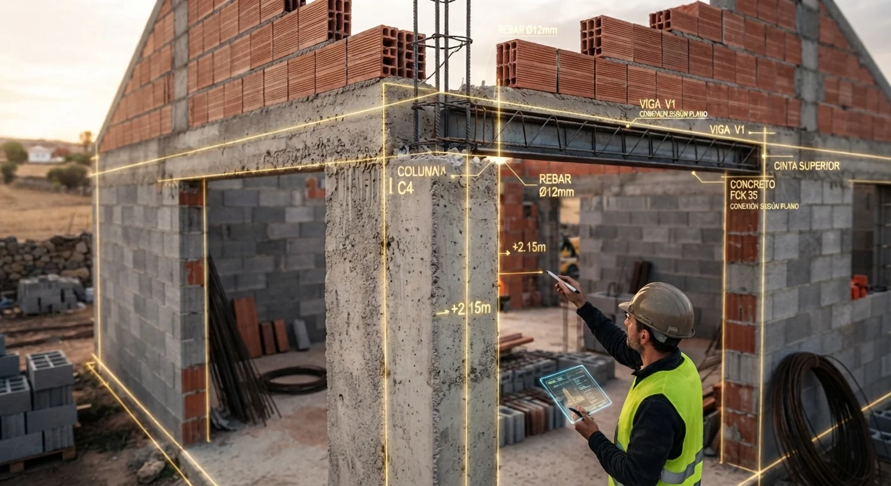

Desde la cimentación.
Construcción desde cero: cimentación, estructura, cerramientos e instalaciones, hasta el acabado final.
CONSTRUCCIÓN · CASTILLA Y LEÓN
Desde la cimentación hasta el acabado final. Reconstruimos ruinas o las demolemos para levantar una nueva construcción. Más de 30 años de experiencia en Castilla y León.
Ver nuestras obras
Construimos viviendas desde la cimentación hasta el acabado final. Recuperamos edificaciones en ruinas y realizamos demoliciones para dar paso a una nueva construcción. También reformamos baños, cocinas e interiores.
Roberto Rueda, responsable técnico de KRONNOS, aporta más de 30 años de experiencia en construcción y rehabilitación. Escuchamos lo que necesitas y definimos contigo el alcance de cada trabajo.
Nuestra mirada está en Castilla y León. Nuestro punto de partida, tu proyecto.
Desde un terreno vacío hasta una vivienda terminada.
Obra nueva, reconstrucción y reformas.
Construcción desde cero: cimentación, estructura, cerramientos e instalaciones, hasta el acabado final.
Reconstruimos edificaciones en ruinas para convertirlas en un nuevo espacio habitable.
Demolemos la construcción existente y preparamos el terreno para levantar una nueva edificación.
Ejecutamos obras nuevas desde la cimentación, con estructura, cerramientos, instalaciones y acabados. También construimos tabiques de yeso laminado, divisiones interiores y elementos a medida.
Cuéntanos qué quieres construirReconstrucción de edificaciones en ruinas, rehabilitación de viviendas y recuperación de espacios existentes. Mejoramos su distribución, su uso y sus acabados.
Hablemos de tu inmuebleReformas de baños y cocinas, colocación de pavimento cerámico, mosaicos y suelo flotante. Atención a la instalación y a los detalles de acabado.
Comparte tu ideaConocer el espacio y entender tus prioridades antes de plantear el siguiente paso.
Ordenar las necesidades, concretar el alcance y conversar sobre las posibilidades.
Avanzar con una dirección clara y atención a los detalles de la obra.
Nuestros trabajos, de cerca.
Pulsa una fotografía para ampliarla.
* Las etapas señaladas se han recreado digitalmente a partir de las fotografías de obra; no son fotografías del estado real en esa fase.
PRÓXIMAMENTE
Estamos preparando la selección de proyectos que compartiremos aquí.
Cuéntanos qué tienes en mente.
Construcción, rehabilitación o reforma en Castilla y León.
Responsable técnico
Roberto Rueda
HABLEMOS DE TU OBRA
Cuéntale a Roberto qué quieres construir o reformar y dónde está tu terreno o inmueble. Contacta directamente por WhatsApp o teléfono.
Hablar por WhatsApp Llamar al +34 695 04 11 47